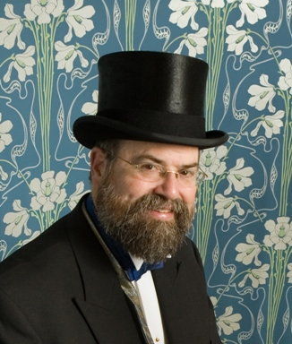
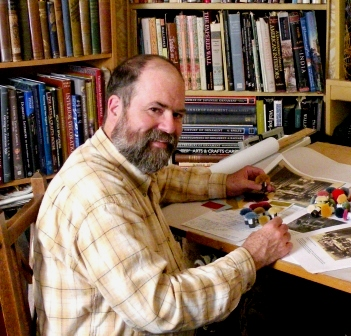
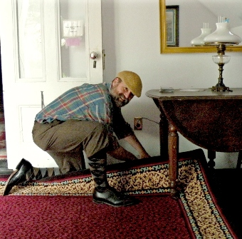

| John Burrows, founder and proprietor of J.R. Burrows & Company, has worked with Victorian and Arts & Crafts Movement design since the early 1980s. During his childhood, mainly spent in Wisconsin, his family traveled frequently and visited historic sites throughout North America and Europe. At age 16, he spent a summer working at the Pelham Puppet factory in Marlborough, Wilts., England. During those months, he explored the same villages and pre-historic monuments that William Morris explored during his teen-age years at nearby Marlborough College. (By all accounts Morris would have much preferred a puppet factory to his life at the college!) Mr. Burrows was educated at Grinnell College in Iowa (nearby the famous "jewel box bank" by Louis Sullivan), and received a MAH (Architectural History) from the University of Virginia, studying under Richard Guy Wilson. John worked in the field of historic preservation in South Dakota and with reproduction of Victorian wallpapers in California before founding his own firm in Boston in 1985. Mr. Burrows has lectured extensively across the United States on the field of 19th century architecture and interior design, and has had papers published in scholarly journals, as well as articles in popular magazines. Since 1991, J.R. Burrows & Co. has been located in the Ludo Poole House (built in 1829) in Rockland, Massachusetts, located on the South Shore, midway between Boston and Plymouth, Massachusetts. During his career Mr. Burrows has had the honor of working on over 100 of America's most significant historic houses and public buildings.  His interests beyond historic architecture are diverse. He occasionally plays the organ or piano at church, and with friends he presents an annual marionette show for the community in Rockland. Mr. Burrows was a founder of a summer social event on Cape Cod: Bear Week Provincetown.With his husband, Christopher, he takes part in the rich and active community of New England contra dancers and also annually attends a number of Victorian balls.
|